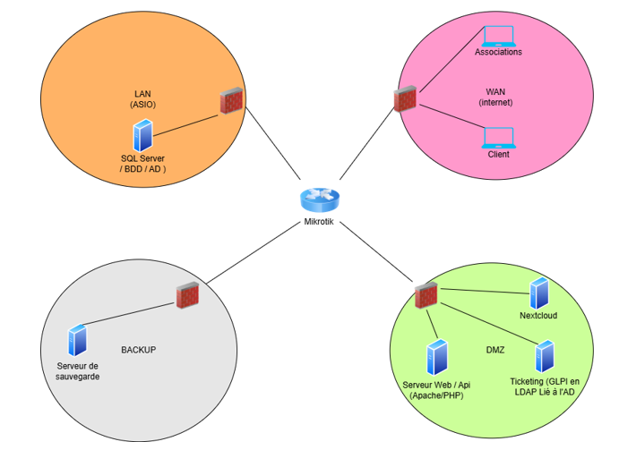

Infrastructure réseau pour la journée santé et citoyenneté (AP3)
Contexte du projet
Chaque année, le lycée Pasteur Mont-Roland de Dole organise des "Journées santé et citoyenneté" faisant intervenir divers acteurs (associations, police, sécurité routière). La gestion de cet événement se faisait par échanges de mails et documents, une méthode chronophage et source d'erreurs.
Sous la supervision de notre professeur M. PERNELLE Sébastien, l'objectif était de centraliser cette gestion. Ce projet a fait l'objet d'une collaboration inter-options : les étudiants SLAM développaient les applications, tandis que mon équipe SISR était chargée de concevoir et déployer l'infrastructure réseau sécurisée pour les héberger.
Contraintes et Exigences
Ce projet, réalisé entre octobre 2025 et janvier 2026, imposait un cahier des charges technique précis pour répondre aux besoins des développeurs :
- Environnement Windows : Mise à disposition d'un serveur Windows Server avec l'environnement .NET et SQL Server pour héberger l'application lourde d'administration. L'accès devait se faire via Bureau à distance (RDP).
- Environnement Web : Un serveur Web (Apache) supportant PHP 8.3 et ses extensions (OpenSSL, PDO, etc.) pour l'interface publique des associations, obligatoirement sécurisé en HTTPS (Port 443).
- Hébergement Cloud : Déploiement d'une solution cloud souveraine (Nextcloud) pour sécuriser les envois de logos et documents par les associations.
- Sécurité et RGPD : Mise en place d'une politique stricte d'accès, d'authentification centralisée (Active Directory) et d'une sauvegarde régulière.
Mes missions techniques
Pour répondre à ces exigences, j'ai participé à la mise en place de l'infrastructure suivante :
- Routage et Sécurité (MikroTik) Configuration d'un routeur MikroTik (via Winbox) pour segmenter le réseau en plusieurs zones (LAN ASIO, DMZ, BACKUP, WAN). J'ai établi les règles de pare-feu gérant les droits de communication entre les réseaux privés et internet.
- Virtualisation et Sauvegarde (Proxmox) Déploiement de l'hyperviseur Proxmox hébergeant les machines virtuelles, couplé à un Proxmox Backup Server dans une zone réseau dédiée pour automatiser les sauvegardes en conformité avec le RGPD.
- Services Systèmes et Web Intégration d'Active Directory pour l'authentification sur le serveur Windows, installation du SGBD SQL Server via SSMS, et déploiement du serveur Apache ainsi que de l'instance Nextcloud dans la DMZ.
Architecture Logique
L'infrastructure s'articule autour du routeur MikroTik centralisant les flux. Le réseau LAN abrite les données critiques (SQL Server, AD), la DMZ expose les services web (Apache, Nextcloud, GLPI) de façon sécurisée, et la zone Backup est isolée pour garantir l'intégrité des sauvegardes.

Schéma logique de l'infrastructure : Segmentation en zones via routeur MikroTik
💡 Axes d'amélioration
Lors de notre soutenance, nous avons identifié deux axes d'amélioration techniques : la mise en place d'une solution automatisée comme Let's Encrypt pour la génération de certificats SSL (plutôt que de l'auto-signé), ainsi que le déploiement de notre propre serveur DNS au lieu de s'appuyer sur celui de l'établissement.